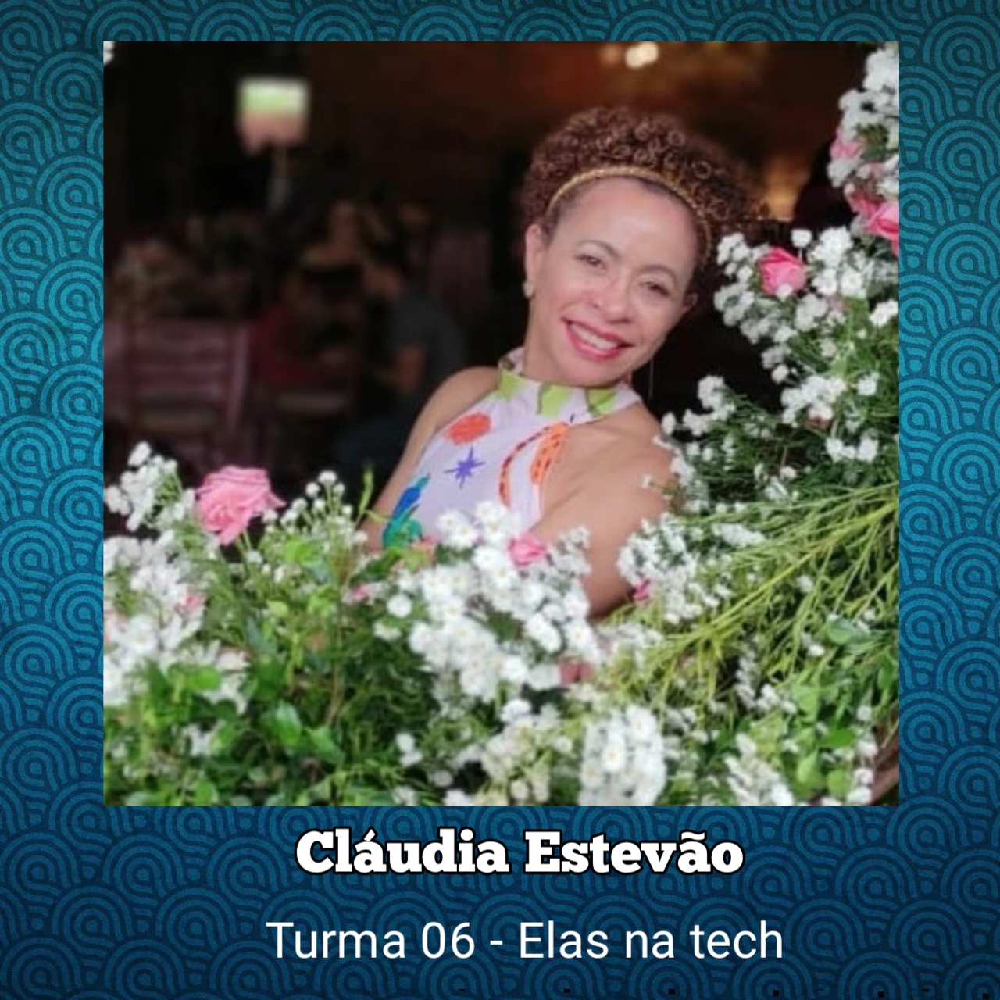

Minha Trajetória no Elas Na Tech
Início do Curso Elas na Tech
Amiga recomendou o curso.
Motivação para enriquecimento profissional e pessoal.
Enfrentando Desafios na Rotina
Carga horária complicada devido ao trabalho, família e trabalhos adicionais.
Determinação para seguir adiante.
Adaptação na Rotina de Estudos
Estudos das 5h às 6:30h.
Realização das tarefas de mãe, dona de casa e profissional.
Estudos até às 3h da madrugada.
Intercalados com trabalhos nos fins de semana.
Desafios com o Equipamento
Uso de um notebook doado em estado de degradação.
Conexão a outra tela e teclado para acessar as aulas.
Necessidade de auxílio do celular para estudar.
Superando Desafios
Conclusão bem-sucedida de desafios e projetos.
Destaque nas aulas ao vivo com interação e aprendizado.
Projeto ODS e Obstáculos
Realização de um projeto ODS em uma semana e meia.
Notebook parou de funcionar na semana de entrega.
Emoções negativas e dificuldades financeiras.
Encorajamento da Professora e Monitora
Professora recusou a desistência e ofereceu apoio.
Frase inspiradora: "Não é hoje que vai desistir..."
Apoio contínuo da monitora.
Continuação com Celular
Decisão de assistir às trilhas e participar das aulas via celular.
Auxílio da professora e monitora na codificação pelo celular.
Persistência com Apoio das Colegas
Incentivo constante das colegas do curso.
Reforço da autoconfiança e determinação.Lições Aprendidas
Uma pequena história
A saga de um Dell
Uma Homenagem de Cláudia Estevão

É incrivel saber que estou inspirando mulheres, que sou admirada, me da mais força para seguir em frente.
Portifólio em construção
Começo
Meio